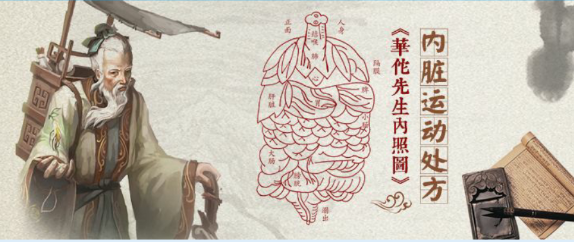

返回
脏腑运动处方
欢迎，昵称
当前成员： 小明



预备式：身体放松，安然、舒适地坐在椅子上（建议选取高直靠背椅或传统屏背 椅），腰背部自然挺直，颈部和头部顶靠住椅背，双腿自然下垂，且双手分别轻放于双腿上。
第一式：放松全身肌肉，两眼微闭，平心静气地进行腹式呼吸。吸气时腹部慢慢鼓起，要深长而缓慢地吸气；呼气时，最大限度地向内收缩腹部，把气流从嘴里长长地呼出来。呼吸时要求均匀、自然平静、无声，呼吸3 次为宜。
第二式：深吸气，腹肌内收，由于腹部肌肉收缩力量增强，膈肌上升，使内脏上提。在吸气的过程中，着重体会两胁后部渐张、腹肌渐渐向“丹田”集中，腹壁从松弛状渐渐绷紧“站定”的感觉。屏息 1秒，然后用膈肌的力量用力呼出气体，腹肌放松，膈肌下降，使内脏恢复原位。分早、中、晚三次进行，建议每次一吸一呼60—70次为宜。
第三式：身体自然放松，轻揉腹部数次，同时进行平静呼吸3次。
注意事项：
（1）饱胀或饥饿时不宜练此坐法。
（2）在室内静坐时应保持空气流通，但不可当风而坐。
（3）过度劳累时不宜练习。
功 效：
（1）可以改善腹部脏器的功能：能改善脾胃功能，有利于舒肝利胆，促进胆汁分泌。
（2）扩大肺活量，改善心肺功能。
（3）加大了胸部隔膜的运动范围，使内脏无形中得到了锻炼。
（4）吸氧量加大，令大脑氧充足，对安神益智有好处。
进入脏腑运动